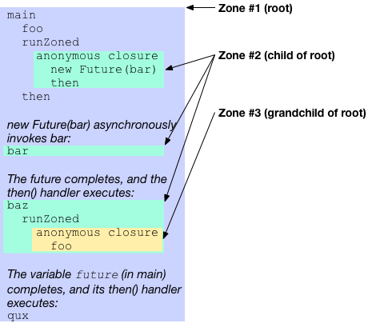

Zones
- Asynchronous dynamic extents
- Zone basics
- Handling uncaught errors
- Using zones with streams
- Storing zone-local values
- Overriding functionality
- Summary
Asynchronous dynamic extents
This article discusses zone-related APIs in the dart:async library,
with a focus on the top-level runZoned()
and runZonedGuarded() functions.
Review the techniques covered in
Futures and Error Handling
before reading this article.
Zones make the following tasks possible:
-
Protecting your app from exiting due to an uncaught exception. For example, a simple HTTP server might use the following asynchronous code:
runZonedGuarded(() { HttpServer.bind('0.0.0.0', port).then((server) { server.listen(staticFiles.serveRequest); }); }, (error, stackTrace) => print('Oh noes! $error $stackTrace'));Running the HTTP server in a zone enables the app to continue running despite uncaught (but non-fatal) errors in the server’s asynchronous code.
-
Associating data—known as zone-local values—with individual zones.
-
Overriding a limited set of methods, such as
print()andscheduleMicrotask(), within part or all of the code. -
Performing an operation each time that code enters or exits a zone. Such operations could include starting or stopping a timer, or saving a stack trace.
You might have encountered something similar to zones in other languages. Domains in Node.js were an inspiration for Dart’s zones. Java’s thread-local storage also has some similarities. Closest of all is Brian Ford’s JavaScript port of Dart zones, zone.js, which he describes in this video.
Zone basics
A zone represents the asynchronous dynamic extent of a call. It is the computation that is performed as part of a call and, transitively, the asynchronous callbacks that have been registered by that code.
For example,
in the HTTP server example,
bind(), then(), and the callback of then()
all execute in the same zone—the zone
that was created using runZoned().
In the next example, the code executes in 3 different zones: zone #1 (the root zone), zone #2, and zone #3.
import 'dart:async'; main() { foo(); var future; runZoned(() { // Starts a new child zone (zone #2). future = new Future(bar).then(baz); }); future.then(qux); } foo() => ...foo-body... // Executed twice (once each in two zones). bar() => ...bar-body... baz(x) => runZoned(() => foo()); // New child zone (zone #3). qux(x) => ...qux-body...
The following figure shows the code’s execution order, as well as which zone the code executes in.

Each call to runZoned() creates a new zone
and executes code in that zone.
When that code schedules a task—such
as calling baz()—that
task executes in the zone where it was scheduled.
For example, the call to qux() (last line of main())
runs in
zone #1 (the root zone)
even though it’s attached to a future that itself runs in
zone #2.
Child zones don’t completely replace their parent zone. Instead new zones are nested inside their surrounding zone. For example, zone #2 contains zone #3, and zone #1 (the root zone) contains both zone #2 and zone #3.
All Dart code executes in the root zone. Code might execute in other nested child zones as well, but at a minimum it always runs in the root zone.
Handling uncaught errors
Zones are able to catch and handle uncaught errors.
Uncaught errors often occur because of code using throw
to raise an exception without an accompanying catch
statement to handle it.
Uncaught errors can also arise in async functions
when a Future completes with an error result,
but is missing a corresponding await to handle the error.
An uncaught error reports to the current zone that failed to catch it. By default, zones will crash the program in response to uncaught errors. You can install your own custom uncaught error handler to a new zone to intercept and handle uncaught errors however you prefer.
To introduce a new zone with an uncaught error handler,
use the runZoneGuarded method. Its onError callback becomes the
uncaught error handler of a new zone. This callback handles any
synchronous errors that the call throws.
runZonedGuarded(() {
Timer.run(() { throw 'Would normally kill the program'; });
}, (error, stackTrace) {
print('Uncaught error: $error');
});Other zone APIs that facilitate uncaught error handling include
Zone.fork, Zone.runGuarded
and ZoneSpecification.uncaughtErrorHandler.
The preceding code has an asynchronous callback
(through Timer.run()) that throws an exception.
Normally this exception would be an unhandled error and reach the top level
(which, in the standalone Dart executable, would kill the running process).
However, with the zoned error handler,
the error is passed to the error handler and doesn’t shut down the program.
One notable difference between try-catch and zoned error handlers is that zones continue to execute after uncaught errors occur. If other asynchronous callbacks are scheduled within the zone, they still execute. As a consequence a zoned error handler might be invoked multiple times.
Any zone with an uncaught error handler is called an error zone.
An error zone might handle errors that originate
in a descendant of that zone.
A simple rule determines where
errors are handled in a sequence of future transformations
(using then() or catchError()):
Errors on Future chains never cross the boundaries of error zones.
If an error reaches an error zone boundary, it is treated as unhandled error at that point.
Example: Errors can’t cross into error zones
In the following example, the error raised by the first line can’t cross into an error zone.
var f = new Future.error(499);
f = f.whenComplete(() { print('Outside of zones'); });
runZoned(() {
f = f.whenComplete(() { print('Inside non-error zone'); });
});
runZonedGuarded(() {
f = f.whenComplete(() { print('Inside error zone (not called)'); });
}, (error) { print(error); });Here’s the output you see if you run the example:
Outside of zones
Inside non-error zone
Uncaught Error: 499
Unhandled exception:
499
...stack trace...If you remove the call to runZoned() or
to runZonedGuarded(),
you see this output:
Outside of zones
Inside non-error zone
Inside error zone (not called)
Uncaught Error: 499
Unhandled exception:
499
...stack trace...Note how removing either the zone or error zone causes the error to propagate further.
The stack trace appears because the error happens outside an error zone. If you add an error zone around the whole code snippet, then you can avoid the stack trace.
Example: Errors can’t leave error zones
As the preceding code shows, errors can’t cross into error zones. Similarly, errors can’t cross out of error zones. Consider this example:
var completer = new Completer();
var future = completer.future.then((x) => x + 1);
var zoneFuture;
runZonedGuarded(() {
zoneFuture = future.then((y) => throw 'Inside zone');
}, (error) { print('Caught: $error'); });
zoneFuture.catchError((e) { print('Never reached'); });
completer.complete(499);Even though the future chain ends in a catchError(),
the asynchronous error can’t leave the error zone.
The zoned error handler found in runZonedGuarded()
handles the error.
As a result, zoneFuture never completes — neither
with a value, nor with an error.
Using zones with streams
The rule for zones and streams is simpler than for futures:
This rule follows from the guideline that streams should have no side effect until listened to. A similar situation in synchronous code is the behavior of Iterables, which aren’t evaluated until you ask for values.
Example: Using a stream with runZonedGuarded()
The following example sets up a stream with a callback,
and then executes that stream in a new zone with runZonedGuarded():
var stream = new File('stream.dart').openRead()
.map((x) => throw 'Callback throws');
runZonedGuarded(() { stream.listen(print); },
(e) { print('Caught error: $e'); });The error handler in runZonedGuarded()
catches the error the callback throws.
Here’s the output:
Caught error: Callback throwsAs the output shows,
the callback is associated with the listening zone,
not with the zone where map() is called.
Storing zone-local values
If you ever wanted to use a static variable but couldn’t because multiple concurrently running computations interfered with each other, consider using a zone-local value. You might add a zone-local value to help with debugging. Another use case is dealing with an HTTP request: you could have the user ID and its authorization token in zone-local values.
Use the zoneValues argument to runZoned() to
store values in the newly created zone:
runZoned(() {
print(Zone.current[#key]);
}, zoneValues: { #key: 499 });To read zone-local values, use the zone’s index operator and the value’s key:
[key].
Any object can be used as a key, as long as it has compatible
operator == and hashCode implementations.
Typically, a key is a symbol literal:
#identifier.
You can’t change the object that a key maps to, but you can manipulate the object. For example, the following code adds an item to a zone-local list:
runZoned(() {
Zone.current[#key].add(499);
print(Zone.current[#key]); // [499]
}, zoneValues: { #key: [] });A zone inherits zone-local values from its parent zone, so adding nested zones doesn’t accidentally drop existing values. Nested zones can, however, shadow parent values.
Example: Using a zone-local value for debug logs
Say you have two files, foo.txt and bar.txt, and want to print all of their lines. The program might look like this:
import 'dart:async';
import 'dart:convert';
import 'dart:io';
Future splitLinesStream(stream) {
return stream
.transform(ASCII.decoder)
.transform(const LineSplitter())
.toList();
}
Future splitLines(filename) {
return splitLinesStream(new File(filename).openRead());
}
main() {
Future.forEach(['foo.txt', 'bar.txt'],
(file) => splitLines(file)
.then((lines) { lines.forEach(print); }));
}This program works,
but let’s assume that you now want to know
which file each line comes from,
and that you can’t just add a filename argument to splitLinesStream().
With zone-local values you can add the filename to the returned string
(new lines are highlighted):
import 'dart:async';
import 'dart:convert';
import 'dart:io';
Future splitLinesStream(stream) {
return stream
.transform(ASCII.decoder)
.transform(const LineSplitter())
.map((line) => '${Zone.current[#filename]}: $line')
.toList();
}
Future splitLines(filename) {
return runZoned(() {
return splitLinesStream(new File(filename).openRead());
}, zoneValues: { #filename: filename });
}
main() {
Future.forEach(['foo.txt', 'bar.txt'],
(file) => splitLines(file)
.then((lines) { lines.forEach(print); }));
}Note that the new code doesn’t modify the function signatures or
pass the filename from splitLines() to splitLinesStream().
Instead, it uses zone-local values to implement
a feature similar to a static variable
that works in asynchronous contexts.
Overriding functionality
Use the zoneSpecification argument to runZoned()
to override functionality that is managed by zones.
The argument’s value is a
ZoneSpecification object,
with which you can override any of the following functionality:
- Forking child zones
- Registering and running callbacks in the zone
- Scheduling microtasks and timers
- Handling uncaught asynchronous errors
(
runZonedGuarded()is a shortcut for this) - Printing
Example: Overriding print
As a simple example of overriding functionality, here is a way to silence all prints inside a zone:
import 'dart:async';
main() {
runZoned(() {
print('Will be ignored');
}, zoneSpecification: new ZoneSpecification(
print: (self, parent, zone, message) {
// Ignore message.
}));
}Inside the forked zone,
the print() function is overridden by the specified print interceptor,
which simply discards the message.
Overriding print is possible because print()
(like scheduleMicrotask() and the Timer constructors)
uses the current zone (Zone.current) to do its work.
Arguments to interceptors and delegates
As the print example shows,
an interceptor adds three arguments
to those defined in the Zone class’s corresponding method.
For example, Zone’s print() method has one argument:
print(String line).
The interceptor version of print(),
as defined by ZoneSpecification,
has four arguments:
print(Zone self, ZoneDelegate parent, Zone zone, String line).
The three interceptor arguments always appear in the same order, before any other arguments.
self- The zone that’s handling the callback.
parent- A ZoneDelegate representing the parent zone. Use it to forward operations to the parent.
zone- The zone where the operation originated.
Some operations need to know which zone the operation was invoked on.
For example,
zone.fork(specification)must create a new zone as child ofzone. As another example, even when you delegatescheduleMicrotask()to another zone, the originalzonemust be the one that executes the microtask.
When an interceptor delegates a method to the parent,
the parent (ZoneDelegate) version of the method
has just one additional argument:
zone, the zone where the original call originated from.
For example,
the signature of the print() method on a ZoneDelegate is
print(Zone zone, String line).
Here’s an example of the arguments
for another interceptable method, scheduleMicrotask():
| Where defined | Method signature |
| Zone | void scheduleMicrotask(void f()) |
| ZoneSpecification | void scheduleMicrotask(Zone self, ZoneDelegate parent, Zone zone, void f()) |
| ZoneDelegate | void scheduleMicrotask(Zone zone, void f()) |
Example: Delegating to the parent zone
Here is an example that shows how to delegate to the parent zone:
import 'dart:async';
main() {
runZoned(() {
var currentZone = Zone.current;
scheduleMicrotask(() {
print(identical(currentZone, Zone.current)); // prints true.
});
}, zoneSpecification: new ZoneSpecification(
scheduleMicrotask: (self, parent, zone, task) {
print('scheduleMicrotask has been called inside the zone');
// The origin `zone` needs to be passed to the parent so that
// the task can be executed in it.
parent.scheduleMicrotask(zone, task);
}));
}Example: Executing code when entering and leaving a zone
Say you want to know how much time some asynchronous code spends executing. You can do this by putting the code in a zone, starting a timer every time the zone is entered, and stopping the timer whenever the zone is left.
Providing run* parameters to the ZoneSpecification
lets you specify the code that the zone executes.
The run* parameters—run, runUnary, and runBinary—specify
code to execute every time the zone is asked to execute code.
These parameters work for zero-argument, one-argument,
and two-argument callbacks, respectively.
The run parameter also works for the initial, synchronous code
that executes just after calling runZoned().
Here’s an example of profiling code using run*:
final total = new Stopwatch();
final user = new Stopwatch();
final specification = new ZoneSpecification(
run: (self, parent, zone, f) {
user.start();
try { return parent.run(zone, f); } finally { user.stop(); }
},
runUnary: (self, parent, zone, f, arg) {
user.start();
try { return parent.runUnary(zone, f, arg); } finally { user.stop(); }
},
runBinary: (self, parent, zone, f, arg1, arg2) {
user.start();
try {
return parent.runBinary(zone, f, arg1, arg2);
} finally {
user.stop();
}
});
runZoned(() {
total.start();
// ... Code that runs synchronously...
// ... Then code that runs asynchronously ...
.then((...) {
print(total.elapsedMilliseconds);
print(user.elapsedMilliseconds);
});
}, zoneSpecification: specification);In this code,
each run* override just starts the user timer,
executes the specified function,
and then stops the user timer.
Example: Handling callbacks
Provide register*Callback parameters to the ZoneSpecification
to wrap or change callback code—the code
that’s executed asynchronously in the zone.
Like the run* parameters,
the register*Callback parameters have three forms:
registerCallback (for callbacks with no arguments),
registerUnaryCallback (one argument), and
registerBinaryCallback (two arguments).
Here’s an example that makes the zone save a stack trace before the code disappears into an asynchronous context.
import 'dart:async';
get currentStackTrace {
try {
throw 0;
} catch(_, st) {
return st;
}
}
var lastStackTrace = null;
bar() => throw "in bar";
foo() => new Future(bar);
main() {
final specification = new ZoneSpecification(
registerCallback: (self, parent, zone, f) {
var stackTrace = currentStackTrace;
return parent.registerCallback(zone, () {
lastStackTrace = stackTrace;
return f();
});
},
registerUnaryCallback: (self, parent, zone, f) {
var stackTrace = currentStackTrace;
return parent.registerUnaryCallback(zone, (arg) {
lastStackTrace = stackTrace;
return f(arg);
});
},
registerBinaryCallback: (self, parent, zone, f) {
var stackTrace = currentStackTrace;
return parent.registerBinaryCallback(zone, (arg1, arg2) {
lastStackTrace = stackTrace;
return f(arg1, arg2);
});
},
handleUncaughtError: (self, parent, zone, error, stackTrace) {
if (lastStackTrace != null) print("last stack: $lastStackTrace");
return parent.handleUncaughtError(zone, error, stackTrace);
});
runZoned(() {
foo();
}, zoneSpecification: specification);
}Go ahead and run the example.
You’ll see a “last stack” trace (lastStackTrace)
that includes foo(),
since foo() was called synchronously.
The next stack trace (stackTrace)
is from the asynchronous context,
which knows about bar() but not foo().
Implementing asynchronous callbacks
Even if you’re implementing an asynchronous API, you might not have to deal with zones at all. For example, although you might expect the dart:io library to keep track of the current zones, it instead relies on the zone handling of dart:async classes such as Future and Stream.
If you do handle zones explicitly,
then you need to register all asynchronous callbacks
and ensure that each callback is invoked in the zone
where it was registered.
The bind*Callback helper methods of Zone
make this task easier.
They’re shortcuts for register*Callback and run*,
ensuring that each callback is registered and runs in that Zone.
If you need more control than bind*Callback gives you,
then you need to use register*Callback and run*.
You might also want to use the run*Guarded methods of Zone,
which wrap the call into a try-catch
and invoke the uncaughtErrorHandler
if an error occurs.
Summary
Zones are good for protecting your code from uncaught exceptions in asynchronous code, but they can do much more. You can associate data with zones, and you can override core functionality such as printing and task scheduling. Zones enable better debugging and provide hooks that you can use for functionality such as profiling.
More resources
- Zone-related API documentation
- Read the docs for runZoned(), runZonedGuarded(), Zone, ZoneDelegate, and ZoneSpecification.
- stack_trace
- With the stack_trace library’s Chain class you can get better stack traces for asynchronously executed code. See the stack_trace package at the pub.dev site for more information.
More examples
Here are some more complex examples of using zones.
- The task_interceptor example
- The toy zone in
task_interceptor.dart
intercepts
scheduleMicrotask,createTimer, andcreatePeriodicTimerto simulate the behavior of the Dart primitives without yielding to the event loop. - The source code for the stack_trace package
- The stack_trace package uses zones to form chains of stack traces for debugging asynchronous code. Zone features used include error handling, zone-local values, and callbacks. You can find the stack_trace source code in the stack_trace GitHub project.
- The source code for dart:html and dart:async
- These two SDK libraries implement APIs featuring asynchronous callbacks, and thus they deal with zones. You can browse or download their source code under the sdk/lib directory of the Dart GitHub project.
Thanks to Anders Johnsen and Lasse Reichstein Nielsen for their reviews of this article.